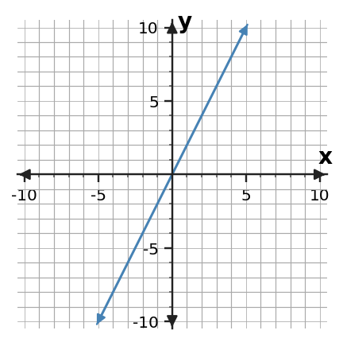
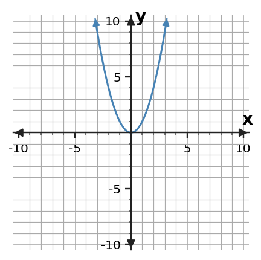
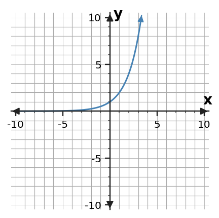
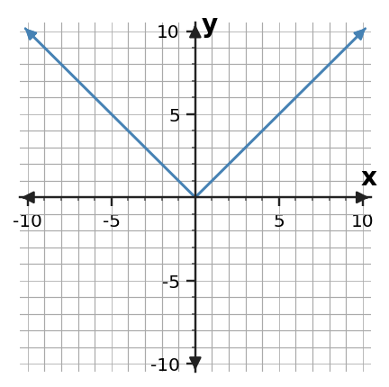
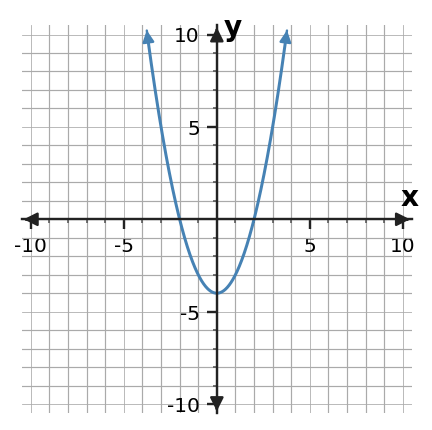
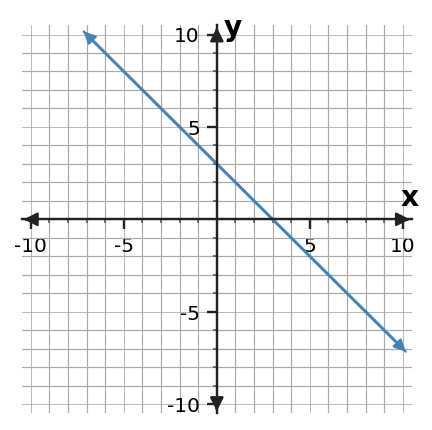

Different families change in recognizable ways.
Section Introduction
Look for how the change changes
A function family is a group of functions that share important behavior. Early in Algebra 1, you can distinguish several families by looking at their rates, shapes, equations, tables, or situations.
The goal is not to memorize a picture with no evidence. A graph shape is one clue, but tables and equations can reveal why that shape happens. Learning to cite the clue makes your classification more reliable.
Name the family, then point to the evidence that earns the name.
Vocabulary / Key Notation Preview
linear · quadratic · exponential · absolute value · function family
Sort the vocabulary. Write each vocabulary word in the column that best matches what you know right now. You may move a word later.
| Know for sure | Recognize | Don't know yet |
|---|---|---|
Section Preview
Skim before close reading. Look at the headings, tables, graphs, and examples. Find 1–2 things you notice and 1–2 things you wonder about.
| What I noticed | |
|---|---|
| What I wonder |
Close Reading Directions
READ IN SHORT CHUNKS. Annotate the words and visuals together. Underline evidence, circle or highlight bold vocabulary, label arrows or important features, connect sentences to tables and graphs, and jot short questions or connections in the margins. Use these directions through the What's To Come section and the reading that follows.
What's To Come
PREVIEW / DECOMPOSE. Use the connected parts to see where this section is headed. Annotate the representations and prompts as you work.
A graphing app has four animation presets. Preset L follows \(y=2x\), Q follows \(y=x^2\), E follows \(y=2^x\), and A follows \(y=|x|\). The app displays the four graphs below. Use these same presets for Parts A–D.
Preset L

Preset Q

Preset E

Preset A

Part A
Which preset has a constant rate of change? What visual evidence supports your choice?
Part B
Which preset has a U-shaped graph, and which has a V-shaped graph?
Part C
Which preset grows by repeated multiplication rather than repeated addition for positive integer inputs?
Part D
Choose any two presets and explain one mathematical feature that distinguishes their families.
I Can 1Recognize a linear pattern from constant rate.
A linear relationship has a constant rate of change. In a table with equally spaced inputs, the outputs change by the same amount each time. On a graph, that constant rate appears as a straight line.
In an equation such as \(y=3x+2\), the coefficient 3 tells the rate: increasing x by 1 increases y by 3. This same rate should be visible in a matching table, graph, or situation.
| x | y | change in y |
|---|---|---|
| 0 | 2 | — |
| 1 | 5 | +3 |
| 2 | 8 | +3 |
| 3 | 11 | +3 |
Equal x-steps + equal y-changes → constant rate → linear.
Example 1: Check for constant rate
Is the relationship linear? Use the table to justify your answer.
| x | y |
|---|---|
| 0 | 7 |
| 2 | 11 |
| 4 | 15 |
| 6 | 19 |
You Try It 1: Test a new table
Is the relationship linear? Use changes in the table as evidence.
| x | y |
|---|---|
| 0 | 1 |
| 1 | 4 |
| 2 | 9 |
| 3 | 16 |
Stop and Discuss
- Why must you consider both the x-step and the y-change when finding a rate?
- How does constant rate connect a table to a straight graph?
I Can 2Notice basic quadratic, exponential, and absolute-value shapes or patterns.
Several common families have recognizable patterns. A quadratic parent graph is U-shaped; an absolute value parent graph is V-shaped. An exponential pattern changes by repeated multiplication, so its growth can speed up dramatically.
Shape is useful evidence, but it is not the only evidence. A quadratic table often has changing first differences with a regular second-difference pattern. An exponential table with equal input steps often has a constant multiplication factor. Absolute value changes direction at a sharp vertex.
Linear
Quadratic
Exponential
Absolute Value
Use shape together with how values change.
Example 2: Identify two shapes
Graph A and Graph B are shown. Identify which is quadratic and which is absolute value. Cite one visible feature for each.

You Try It 2: Distinguish exponential from linear
One graph is linear and one is exponential. Identify each and describe how their growth differs.

Stop and Discuss
- What feature distinguishes a quadratic U from an absolute-value V?
- How is repeated multiplication different from a constant additive rate?
I Can 3Use a table, graph, equation, or context as evidence.
You can classify a family from different representations, but the evidence must come from the representation you actually have. In a table, inspect differences or ratios. In a graph, inspect shape and rate behavior. In an equation, inspect the way the variable appears.
Contexts also carry clues. A fixed amount added each hour suggests linear change. A quantity that doubles each period suggests exponential change. A distance from a central value can produce an absolute-value pattern.
Equation / Rule
\(y=x^2-4\)
The variable is squared.
Table
| x | y |
|---|---|
| 0 | 1 |
| 1 | 2 |
| 2 | 4 |
| 3 | 8 |
Outputs multiply by 2.
Graph
Context / Situation
A savings balance increases by $25 every week.
Constant additive change.
Example 3: Classify from a table
Which family is most strongly suggested by the table: linear or exponential? Cite the pattern in the outputs.
| x | y |
|---|---|
| 0 | 3 |
| 1 | 6 |
| 2 | 12 |
| 3 | 24 |
You Try It 3: Classify from a context
A water tank is being filled at a steady 6 gallons per minute. Which family is most strongly suggested, and what phrase in the context is your evidence?
Stop and Discuss
- What kind of evidence is easiest to read from a table? From a context?
- Why is it useful to have more than one representation when classifying a family?
I Can 4Explain why one family is more likely than another.
A strong classification is a claim plus evidence. Instead of writing only “quadratic,” explain what in the data, graph, equation, or context makes quadratic more plausible than another family.
Sometimes evidence rules out a family before it identifies one. If the first differences are not constant, the relationship is not linear. If outputs do not have a constant multiplication factor, a simple exponential model is less likely. Compare the competing features directly.
Claim: This relationship is more likely exponential than linear.
Evidence: With equal x-steps, outputs multiply by 3 rather than add a constant amount.
Comparison: A linear table would show constant first differences.
Example 4: Choose the better family
A table is shown. Is linear or quadratic more likely? Explain why one is more likely than the other.
| x | y |
|---|---|
| -2 | 4 |
| -1 | 1 |
| 0 | 0 |
| 1 | 1 |
| 2 | 4 |
You Try It 4: Defend a family choice
A table is shown. Is linear or exponential more likely? Use at least one feature that supports your choice and one feature that makes the other family less likely.
| x | y |
|---|---|
| 0 | 5 |
| 1 | 10 |
| 2 | 20 |
| 3 | 40 |
Stop and Discuss
- How can evidence rule out one family even before you name the best family?
- What makes an explanation stronger than “it looks like a quadratic”?
Vocabulary Reference
| Term | Meaning in this section |
|---|---|
| linear | A family with constant rate of change and a straight-line graph. |
| quadratic | A family involving a squared variable; a basic graph is U-shaped. |
| exponential | A family characterized by repeated multiplication over equal input steps. |
| absolute value | A family built from distance from zero or a center; a basic graph is V-shaped. |
| function family | A group of functions that share important structural or behavioral features. |
Section Summary
- Linear relationships have constant rate of change.
- Quadratic, exponential, and absolute-value families have different patterns and graph features.
- Tables, graphs, equations, and contexts can all provide family evidence.
- A strong classification explains why one family fits better than another.
What I Understand Now
Pick two function families from this section. Describe one clue that helps you distinguish them in a graph and one clue that helps you distinguish them in a table or equation.
Common Mistakes to Watch
| Mistake | What to remember |
|---|---|
| Classifying only by graph shape | Use a second feature such as differences, ratios, or equation structure. |
| Calling any curved growth exponential | Look for repeated multiplication over equal input steps. |
| Calling any U-shape absolute value | Absolute value has straight arms meeting at a sharp vertex; quadratic bends smoothly. |
| Saying “linear” without checking x-steps | Rate compares changes in both variables. |